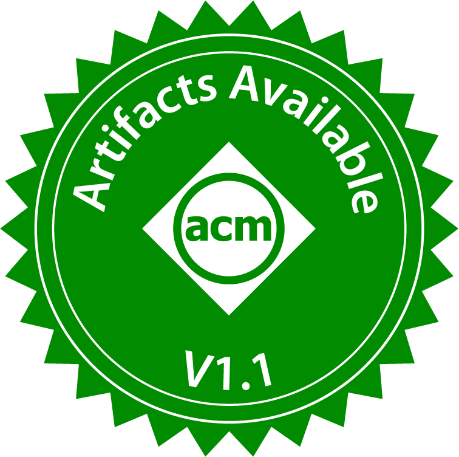
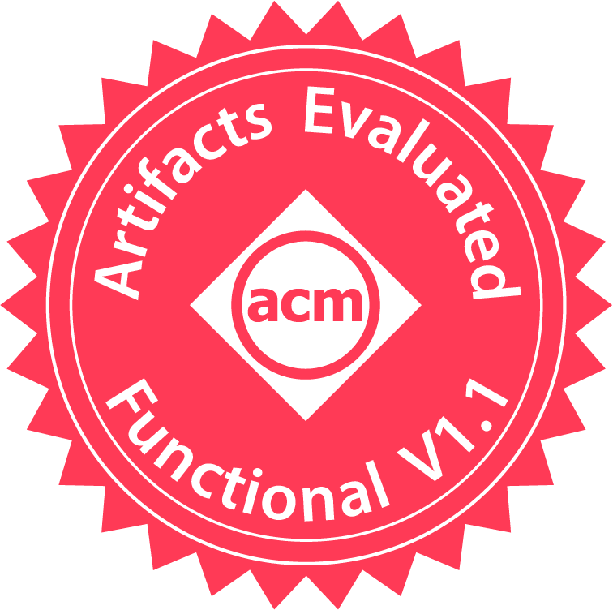
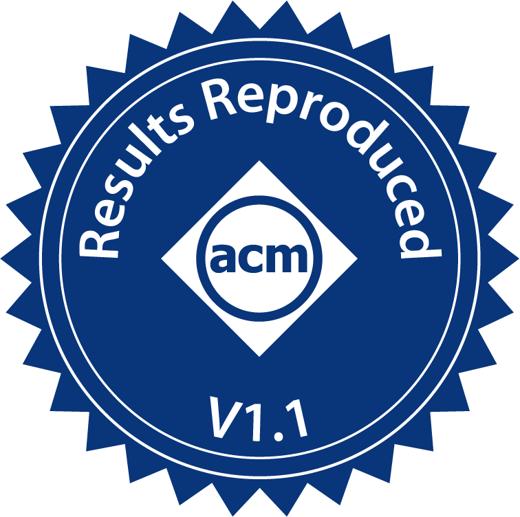

Yufeng GuI am a final-year Ph.D. candidate at University of Michigan, advised by Prof. Reetuparna Das. I am working closely with Prof. David Blaauw and Prof. Satish Narayanasamy. My research focuses on computer architecture and system, and has been selected as Communications of ACM Research Highlights. Before UMich, I obtained a bachelor's degree from Zhejiang University in 2020. Email / CV / Linkedin / Google Scholar / Blogs |
Research |
|
My research focuses on computer architecture, hardware/software co-design, processing-in-memory, resource provisioning and scheduling. I built novel hardware and system solutions on accelerating large scale emerging applications, including generative artificial intelligence (GenAI) and precision health:
|
News
|
Selected Publications[Full list] |
|
Stone-Skimming: Attacking Big-Data Analytics Applications with Page Table Walk
PangenomicsBench: A Benchmark Suite and Characterization of Pangenomics
GenDP: A Framework of Dynamic Programming Acceleration for Genome Sequencing Analysis (Invited Paper)
DX100: A Programmable Data Access Accelerator for Indirection   
PIM Is All You Need: A CXL-Enabled GPU-Free System for Large Language Model Inference
Multi-Dimensional Vector ISA Extension for Mobile In-Cache Computing
GenDP: A Framework of Dynamic Programming Acceleration for Genome Sequencing Analysis
GenomicsBench: A Benchmark Suite for Genomics |


Awards and Honors
|
Talks
|
Teaching Experience
|
Services
|